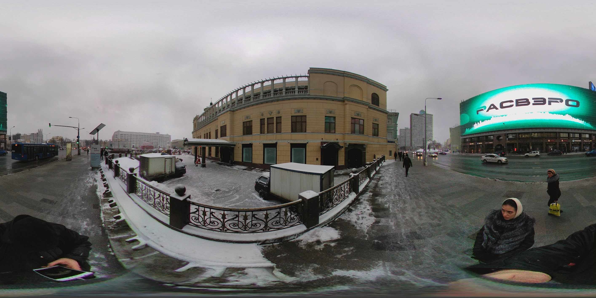
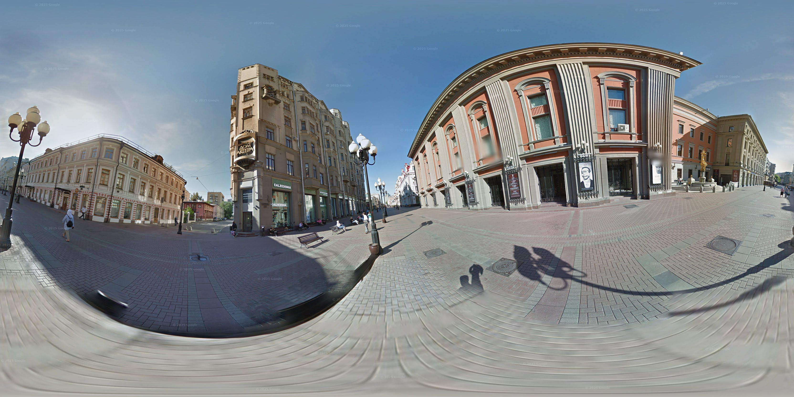
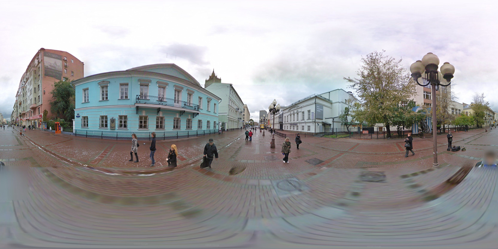

Арбат 360°
Интерактивное путешествие по историческому центру Москвы. Посмотрите на легендарный ресторан "Прага" и другие памятные места.
Интерактивное путешествие по историческому центру Москвы. Посмотрите на легендарный ресторан "Прага" и другие памятные места.


